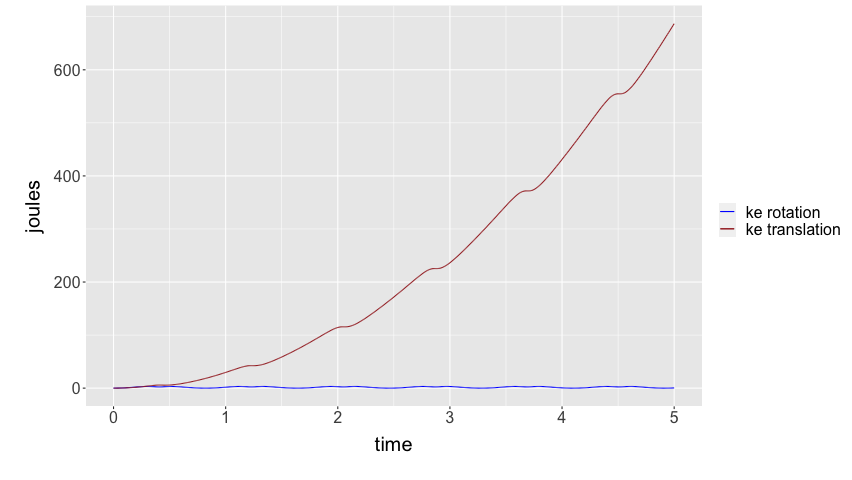
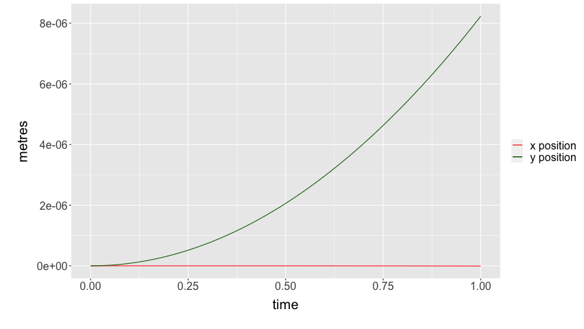
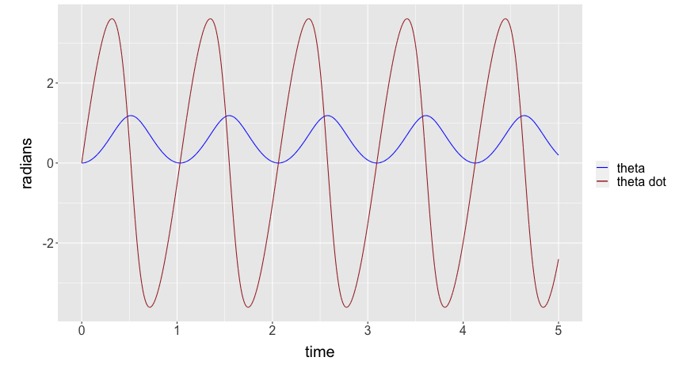

Let's draw a picture of this situation!

We first set up the basic assumptions and variables.
GRAV <- 9.8 # gravity (m/s^2) MASS <- 3.11*10^(-5) # mass (kg) I_CM <- 9.85*10^(-5) # roational inertia at the centre of gravity (kg m^2) L1 <- 0.0017 # distance from rotation point to CoM (m) L2 <- 0.0034 # distance from rotation point to tension (m) PHI <- pi/6 # angle of Ft relative to floor (orthogonal) (rad) FT <- 5*10^(-4) # tension force (N) OMEGA <- 0 # angle of line orthogonal to floor relative to gravity (rad) (because shifted axis)
Additionally, we set the time interval and seed values for time and theta (distance from flat):
dt <- 0.0001 t_max <- 1 vx <- 0 vy <- 0 x <- 0 y <- 0 theta <- 0 thetadot <- 0 time <- 0
Great. Let's start generating the table! We essentially write a for loop to appends to a few different vectors. Variables appended with c reflect the column vectors that we will put together.
cTime = NULL cTheta = NULL cDDTheta = NULL cDTheta = NULL cTorqueNet = NULL cAccelX = NULL cAccelY = NULL cVelX = NULL cVelY = NULL cPosX = NULL cPosY = NULL cPosPX = NULL cPosPY = NULL cFFriction = NULL cFNormal = NULL # debugging values cFNetY = NULL cFTensionPhiComponent = NULL cFGravityPhiComponent = NULL cMuStatic = NULL cKERot = NULL cKETrans = NULL
Awesome. Let's now run a lovely little for loop to actually populate the values recursively.
for (i in 0:(t_max/dt)) {
# We first populate the time column with the time, theta column with theta
cTime[i] = time
# Given the theta value, we calculate the net torque and set that
I_ROT <- I_CM + MASS * L1^2 # we calculate I_ROT using
# the Parallel axis theorem
torque <- L2 * FT * cos(theta + PHI) - L1 * MASS * GRAV * cos(theta - OMEGA)
cTorqueNet[i] = torque
# Now that we know the net torque, we could know how much the angular
# acceleration is by just dividing out the rotational inertia
thetadotdot <- torque/I_ROT
cDDTheta[i] = thetadotdot
# We could also multiply the theta acceleration by time to get the
# velocity at that point
thetadot <- dt*thetadotdot + thetadot
cDTheta[i] = thetadot
# we then tally the theta value
theta <- dt*thetadot + theta
cTheta[i] = theta
# We could therefore component-ize the acceleration in theta, times
# the length of the object until com, to figure the acceleratinos
# of the com
ax <- -1 * L1 * sin(theta) * thetadotdot
cAccelX[i] = ax
ay <- L1 * cos(theta) * thetadotdot
cAccelY[i] = ay # @mark isn't sin and cos backwards?
# "position prime": calculated positino
cPosPX[i] = cos(theta)*L1
cPosPY[i] = sin(theta)*L1
# We also tally the components seperately for velocity
vx <- ax*dt + vx
vy <- ay*dt + vy
# We finally tally the positions as well
x <- vx*dt + x
y <- vy*dt + y
cPosX[i] = x
cPosY[i] = y
# Based on these accelerations, we therefore could calculate the relative
# force of friction and normal force by subtracting the force in that direction
# out of net
ffriction <- FT*sin(PHI) + MASS*GRAV*sin(OMEGA)-MASS*ax
fnormal <- MASS*ay-FT*cos(PHI)+MASS*GRAV*cos(OMEGA)
cFNetY[i] = MASS*ay
cFTensionPhiComponent[i] = FT*cos(PHI)
cFGravityPhiComponent[i] = -MASS*GRAV*cos(OMEGA)
cFFriction[i] = ffriction
cFNormal[i] = fnormal
# Then, we calculate the energies
cKERot[i] = 0.5 * I_ROT * thetadot^2
cKETrans[i] = 0.5 * MASS * (vx^2+vy^2)
# Dividing the friction force by the normal force, of course, will result in
# the (min?) friction coeff
cMuStatic[i] = ffriction/fnormal
# We incriment the time and also increment theta by multiplying the velocity
# by dt to get change in the next increment
time <- dt + time
}
We now put all of this together in a dataframe.
rotating_link <- data.frame(cTime,
cTheta,
cDTheta,
cDDTheta,
cTorqueNet,
cAccelX,
cAccelY,
cPosX,
cPosY,
cPosPX,
cPosPY,
cFFriction,
cFNormal,
cMuStatic,
cKERot,
cKETrans)
names(rotating_link) <- c("time",
"theta",
"d.theta",
"dd.theta",
"net.torque",
"accel.x",
"accel.y",
"pos.x",
"pos.y",
"pos.p.x",
"pos.p.y",
"friction.force",
"normal.force",
"friction.coeff",
"ke.rot",
"ke.trans")
Let's import some visualization tools, etc.
library(tidyverse)
Let's first see the head of this table:
head(rotating_link)
1e-04 2.9059380176551e-10 1.9372920117422e-06 0.00968646005829307 9.54117186351211e-07 -4.78520293178154e-15 1.64669820990982e-05 -7.97533822000296e-23 4.94009463001366e-13 0.0017 4.94009463001367e-13 0.00025 -0.000128232189769076 -1.94958848047598 1.8484036034639e-16 1.68662452673712e-22 2e-04 5.81187603505943e-10 2.90593801740433e-06 0.0096864600566213 9.54117186186541e-07 -9.57040586149841e-15 1.64669820962562e-05 -2.39260146573936e-22 9.88018925960103e-13 0.0017 9.88018925960103e-13 0.00025 -0.000128232189769076 -1.94958848047598 4.15890810719562e-16 3.79490518461272e-22 3e-04 9.68646005787513e-10 3.8745840228157e-06 0.00968646005411363 9.54117185939536e-07 -1.59506764307837e-14 1.64669820919932e-05 -5.5827367525568e-22 1.64669820983877e-12 0.0017 1.64669820983877e-12 0.00025 -0.000128232189769076 -1.94958848047598 7.39361441130349e-16 6.74649810461973e-22 4e-04 1.45296900857678e-09 4.8432300278927e-06 0.00968646005077009 9.54117185610197e-07 -2.39260146361963e-14 1.64669820863092e-05 -1.11654735029939e-21 2.47004731458053e-12 0.0017 2.47004731458053e-12 0.000250000000000001 -0.000128232189769076 -1.94958848047598 1.1552522514671e-15 1.05414032857393e-21 5e-04 2.03415661183196e-09 5.81187603255177e-06 0.00968646004659066 9.54117185198522e-07 -3.34964204733314e-14 1.64669820792041e-05 -2.00978523007641e-21 3.45806624011433e-12 0.0017 3.45806624011433e-12 0.000250000000000001 -0.000128232189769077 -1.94958848047597 1.66356324158625e-15 1.51796207266616e-21 6e-04 2.71220881550289e-09 6.7805220367093e-06 0.00968646004157534 9.54117184704513e-07 -4.46618939368211e-14 1.64669820706781e-05 -3.34964204922164e-21 4.61075498635491e-12 0.0017 4.61075498635491e-12 0.000250000000000001 -0.000128232189769077 -1.94958848047597 2.26429441131234e-15 2.06611504257856e-21
Before we start graphing, let's set a common graph theme.
default.theme <- theme(text = element_text(size=20), axis.title.y = element_text(margin = margin(t = 0, r = 10, b = 0, l = 20)), axis.title.x = element_text(margin = margin(t = 10, r = 0, b = 20, l = 0)))
Cool! We could first graph a function for theta over time.
rotating_link %>% ggplot() + geom_line(aes(x=time, y=theta)) + default.theme

And, similarly, we will graph ax and ay on top of each other:
rotating_link %>% ggplot() + geom_line(aes(x=time, y=accel.x, colour="X Acceleration")) + geom_line(aes(x=time, y=accel.y, colour="Y Acceleration")) + scale_colour_manual("", breaks = c("X Acceleration", "Y Acceleration"), values = c("red", "dark green")) + ylab("acceleration") + default.theme

Let's also plot torque as well.
rotating_link %>% ggplot() + geom_line(aes(x=time, y=net.torque)) + default.theme

And. Most importantly! Let's plot the normal force.
rotating_link %>% ggplot() + geom_line(aes(x=time, y=normal.force)) + default.theme

Obviously, after the normal force becomes negative, this graph stops being useful.
Theta dot atop theta:
We finally, plot KE rotation and translation
rotating_link %>% ggplot() + geom_line(aes(x=time, y=ke.rot, colour="ke rotation")) + geom_line(aes(x=time, y=ke.trans, colour="ke translation")) + scale_colour_manual("", breaks = c("ke rotation", "ke translation"), values = c("blue", "brown")) + ylab("joules") + default.theme

rotating_link %>% ggplot() + geom_line(aes(x=time, y=pos.x, colour="x position")) + geom_line(aes(x=time, y=pos.y, colour="y position")) + scale_colour_manual("", breaks = c("x position", "y position"), values = c("red", "dark green")) + ylab("metres") + default.theme

floor
rotating_link %>% ggplot() + geom_line(aes(x=time, y=pos.p.x, colour="x position")) + geom_line(aes(x=time, y=pos.p.y, colour="y position")) + scale_colour_manual("", breaks = c("x position", "y position"), values = c("red", "dark green")) + ylab("metres") + default.theme

rotating_link %>% ggplot() + geom_line(aes(x=time, y=theta, colour="theta")) + geom_line(aes(x=time, y=d.theta, colour="theta dot")) + scale_colour_manual("", breaks = c("theta", "theta dot"), values = c("blue", "brown")) + ylab("radians") + default.theme

rotating_link %>% ggplot() + geom_line(aes(x=time, y=dd.theta, colour="thetadd")) + scale_colour_manual("", breaks = c("theta"), values = c("blue")) + ylab("radians") + default.theme